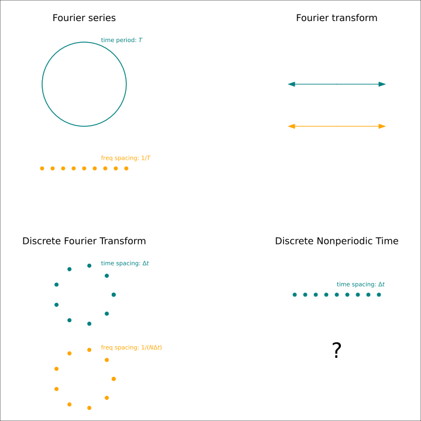
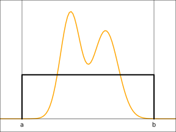

Part 2, Discrete Time
This article is part of a series:
- Part 1, The continuous world: Fourier series to Fourier transforms
- Part 2, Discrete time
- Part 3, Unifying the continuous and discrete worlds: the dirac comb
The purpose of this post is mainly to provide intuition about how signals are discretized. Please don’t lose sleep over how messy the math here is. The next article will provide a powerful tool which will immensely simplify many of the formulas in this article.
The modern truth is that even though the things we care about are analog, computers live in a digital world. Any signal processing done inside a computer must both be discrete in the time domain, and also represent values with limited precision.
To explain the math though, let’s assume for the remainder of the article that we can represent real numbers with infinite precision, and that we are only forced to discretize the time domain.
With the Fourier series as our predecessor, we now work out the discrete fourier transform (DFT).
The DFT
Consider the set of functions \(f: \{0, \cdots, N-1\} {\rightarrow}{\bf C}\). These form a complex inner product space, with their inner product defined as \(\braket{f|g} = \sum_{n=0}^{N-1} f^*(n) g(n)\). In fact this is nothing more than the vector space \({\bf C}^N\).
\(\braket{e^{2\pi i k_1 n} | e^{2\pi i k_2 n}} = \sum_{n=0}^{N-1} e^{2\pi i (k_2-k_1)n} = \frac{1-e^{2\pi i (k_2-k_1)N}}{1-e^{2\pi i (k_2-k_1)}}\). This is zero if and only if \(2\pi (k_2 - k_1)N = 2\pi k\) for some integer \(k\), that is, \(k_2-k_1 = k/N\). The intuition behind these formulas is that when the condition is satisfied, the terms in the sum form \(N\) evenly spaced rays shining from the origin of the complex plane, which add to zero because of their symmetry.
Hence, \(\{e^{2\pi i (k/N)n}\}_{k\in {\bf Z}}\) is an orthogonal set of functions. However, any two functions where \(k\) differs by a multiple of \(N\) are actually the same function on our discrete set of points. This is because \(e^{2\pi i (0/N)n} = e^{2\pi i (N/N)n} = 1\) for all integers \(n\). This effect is known as aliasing.
Because of aliasing, our actual orthonormal basis is \(\{\frac{1}{\sqrt{N}} e^{2\pi i (k/N)n}\}_{k \in \{0, \cdots, N-1\}}\). It makes sense that we have \(N\) basis functions, since our original vector space was of dimension \(N\).
We now define our discrete fourier transform, which is standard in practically all software implementations:
\[ \boxed{ \begin{aligned} \mathrm{DFT}[x(n)] &=\sum_{n=0}^{N-1} e^{-2\pi ikn/N} x(n) \\ \mathrm{IDFT}[X(k)] &=\frac{1}{N}\sum_{n=0}^{N-1} e^{2\pi ikn/N} X(k) \end{aligned} } \]
Note that instead of having a \(1/\sqrt{N}\) in both transforms to make them symmetric, we’ve placed the entire \(N\) term in the inverse transform. This makes the transform non-unitary. The reasons for this, however, will become clear in the next article.
So far we’ve been using integer values for \(n\). If we place our domain of \(N\) points in the time-domain though, and change variables so \(t = \Delta t n\) for some scale factor \(\Delta t\), then our orthonormal functions become \(\{\frac{1}{\sqrt{N}} e^{2\pi i (\frac{k}{N\Delta t})t}\}_{k \in \{0, \cdots, N-1\}}\), so that in the frequency domain our points are spaced \(\frac{1}{N\Delta t}\) apart.
The DTFT
So far, our DFT can handle functions which periodic with period \(N\). What if we want to handle an aperiodic signal though? Suppose we have an audio CD recorder that is responsible for sampling an analog sound wave at 44.1kHz. Every 1/44.1kHz \(\approx\) 22.7us, this ADC (analog-to-digital converter) will capture the amplitude at its input, round it to, say, the nearest 8-bit value, and then output it as a practically endless stream of numbers. In theory, it has been running since the beginning of time and will continue to run after the stars burn out.
How do we model this? Perhaps we could imitate what we did in the continuous case. Take our DFT scenario, and imagine the limit as \(N{\rightarrow}\infty\). But if we only extend the right side of our domain to infinity, we’re stuck with a left end which is fixed at 0. Should we perhaps consider \(\{-N, \cdots N\}\) to be our domain instead? At this point I got bogged down in the details of the math and never completed it.
Fortunately, we don’t have to do this, because we had already derived the answer in the previous article! Take a look at the following figure, which summarizes all the things that we have derived so far. There is a pattern which allows us to immediately write down the equation.

Because of the wonderful duality of these transforms, we can pretty much copy the Fourier series transforms verbatim to arrive at the Discrete Time Fourier Transform (DTFT):
\[ \begin{align} \mathrm{DFTF}[x(n)] &= \sum_{n=-\infty}^{\infty} e^{-2\pi i kn} x(n) \\ \mathrm{IDFTF}[X(k)] &= \int_{k=0}^1 e^{2\pi i kn} X(k) dk \end{align} \]
TODO: z-domain
Many people choose to think in terms of \(z^n\), where \(z=e^{2\pi ik}\)
The Nyquist-Shannon theorem
We can now explain the outrageous claim of the Nyquist-Shannon sampling theorem. What it says is if you have a continuous function which in the frequency domain has bandwidth \(F\), as long as you sample it at a frequency greater than \(F\), you have preserved ALL the information of that function.
From our sampled points, we can perfectly reconstruct the original signal with a magical process called sinc interpolation: essentially we multiply each sample by a time-shifted sinc function and add them all up. Intuitively this makes sense, since each sinc function is 1 at the sample and 0 for all other samples, so it acts like a sort of smooth “basis”, and changing the value of one sample will not affect the interpolation at the other samples.

With the DTFT in hand though, we can now analyze this more rigorously. Let’s say our signal is \(x(t)\), and its Fourier transform is \(X(f) = \int_{-\infty}^{\infty} e^{-2\pi ift}x(t)dt\). Suppose \(X(f)\) lies completely within the interval \([a,b]\), where \(a-b=F\). In that case, we can represent \(X(f)\) by its Fourier series: \[\int_a^b e^{2\pi itf}X(f)df = \int_{-\infty}^\infty e^{2\pi itf}X(f)df = x(t)\] The assumption that \(X(f)\) is band-limited is crucial to the equality of the coefficients of the Fourier series and the Fourier transform. The Fourier series has as its domain \(\{\frac{n}{b-a}\}_{n\in{\bf Z}}\). Hence the coefficients of the Fourier series is nothing more than \(x(t)\) sampled at a rate of \(F\). At the same time, we know that we can use these coefficients to perfectly reconstruct the frequency spectrum lying in the interval \([a,b]\), and hence perfectly reconstruct the original signal \(x(t)\).

From a frequency domain perspective, what we are essentially doing to \(X(f)\) was multiplying it by a square window. But of course, in the time domain that corresponds to convolution by sinc….
Additional topics
We glossed over the fact that not only are computers discretized in time, they are also limited in the precision they can represent real amplitudes. When they round to the nearest representable level, they introduce quantization noise. This noise is often modeled as Gaussian (even though it isn’t), and it has an average power relative to full scale, which must be carefully considered in system design. I might expand this section once I learn more about this.
One other fascinating topic is how the DFT is actually implemented in software. A naive coding of the formula would yield a runtime of \(O(N^2)\). In the 1960s, an algorithm was discovered that ran in time \(O(N\log N)\). It was dubbed the title of “Fast Fourier Transform” (FFT). This discovery completely revolutionized the field of signal processing, and for the first time made it feasible to process in the digital domain. There is a very elegant explanation of the FFT which casts the problem as a polynomial multiplication problem to exploit very subtle symmetries.